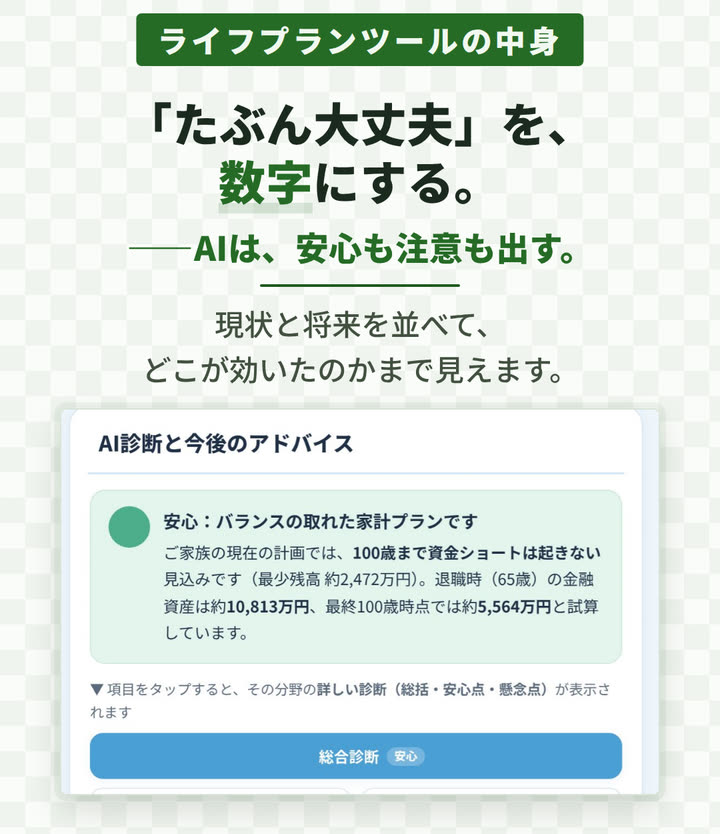
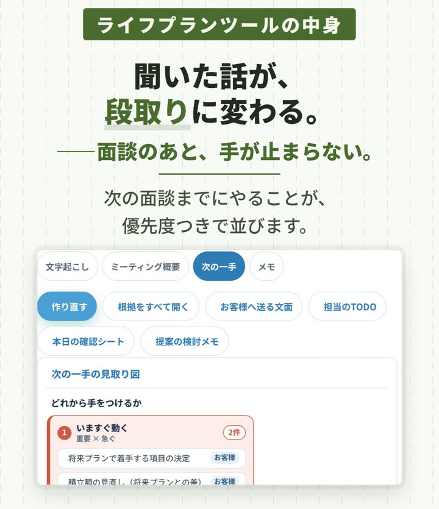
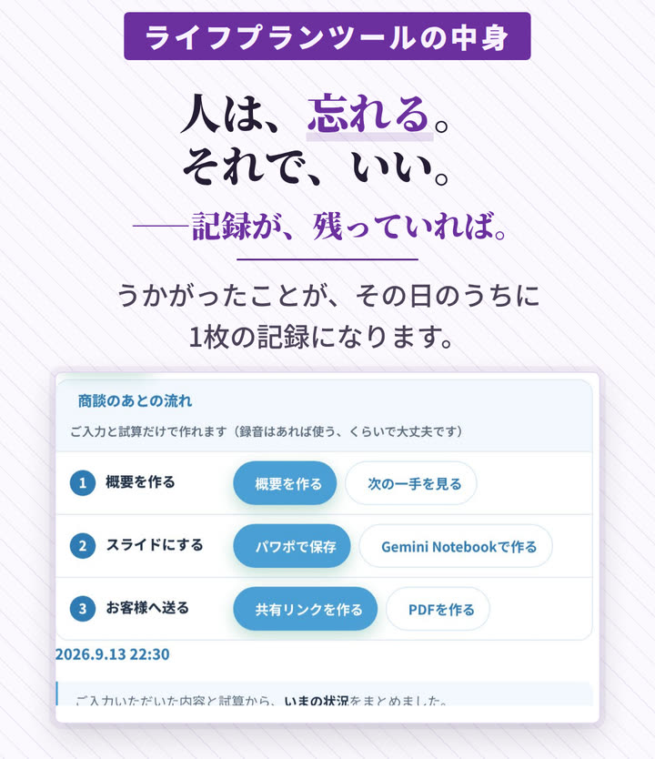
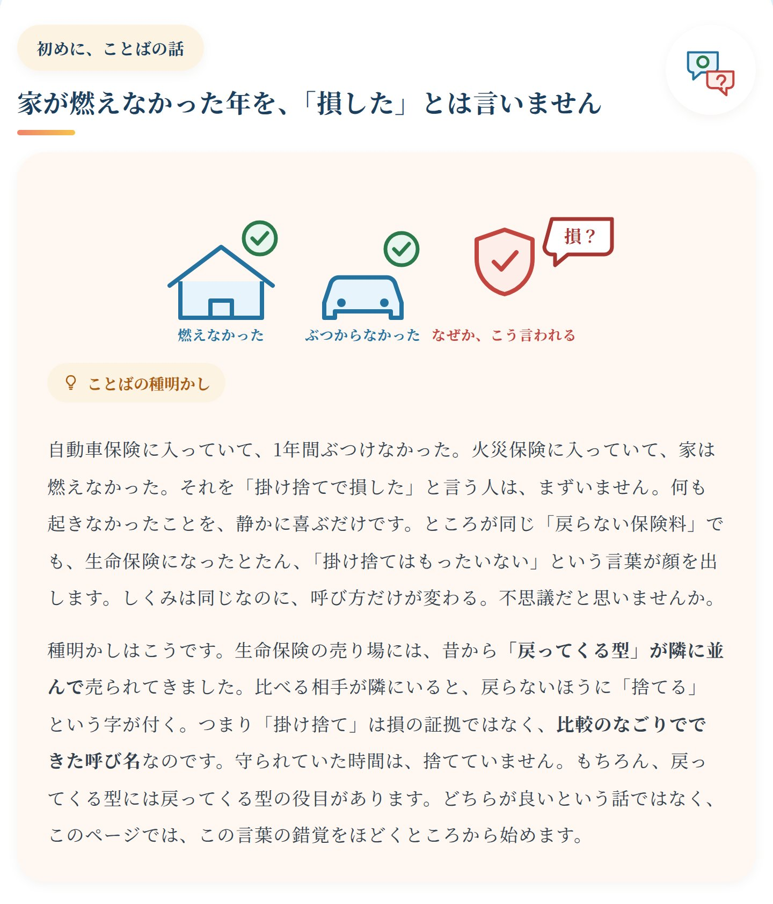
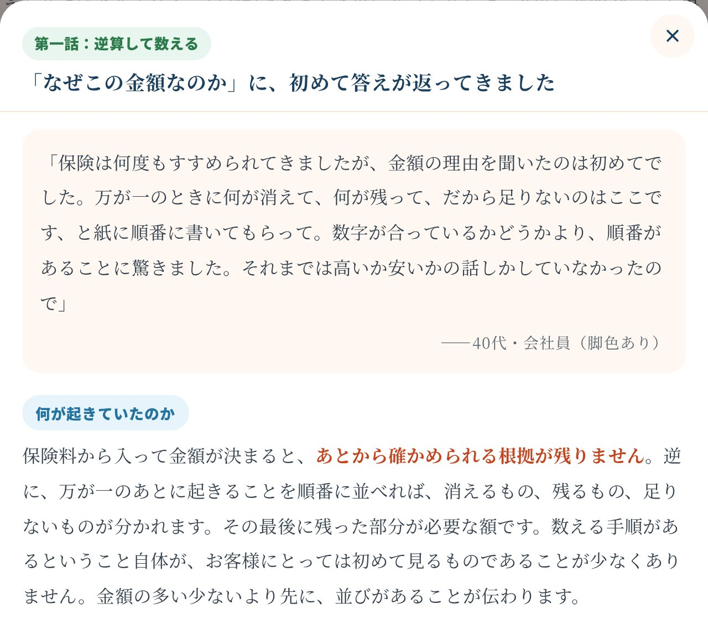
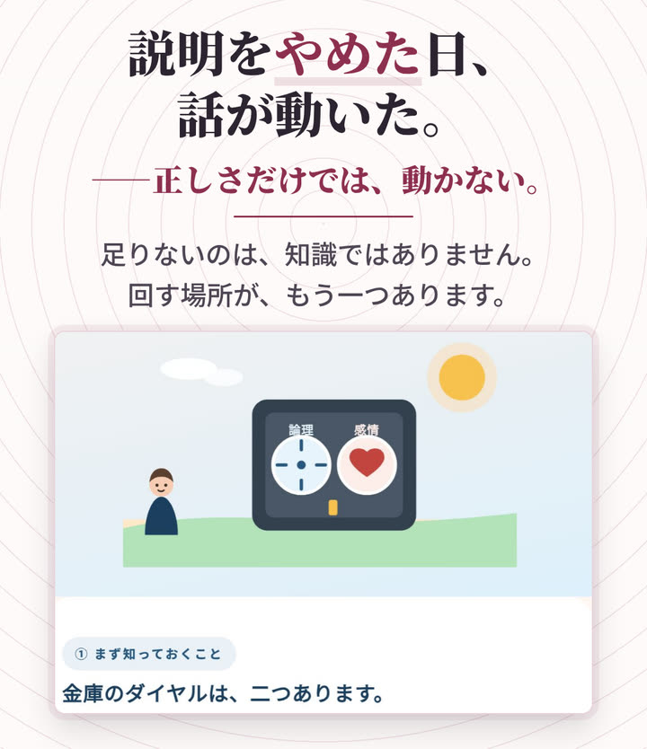
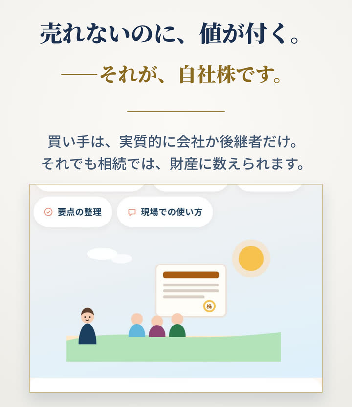
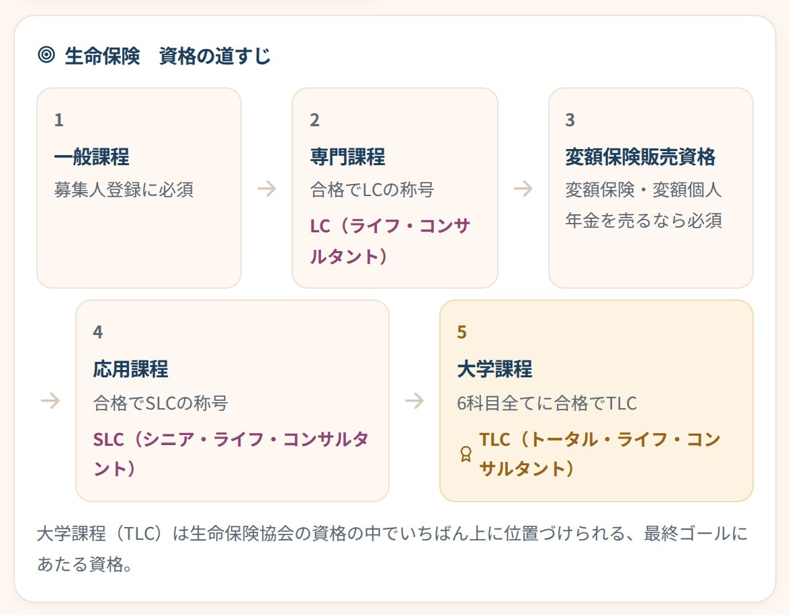
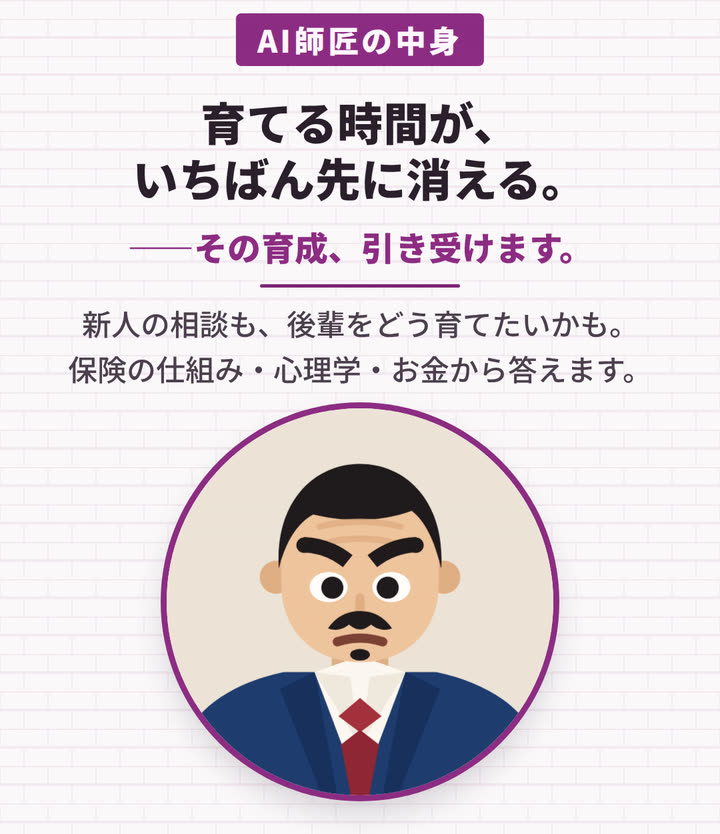
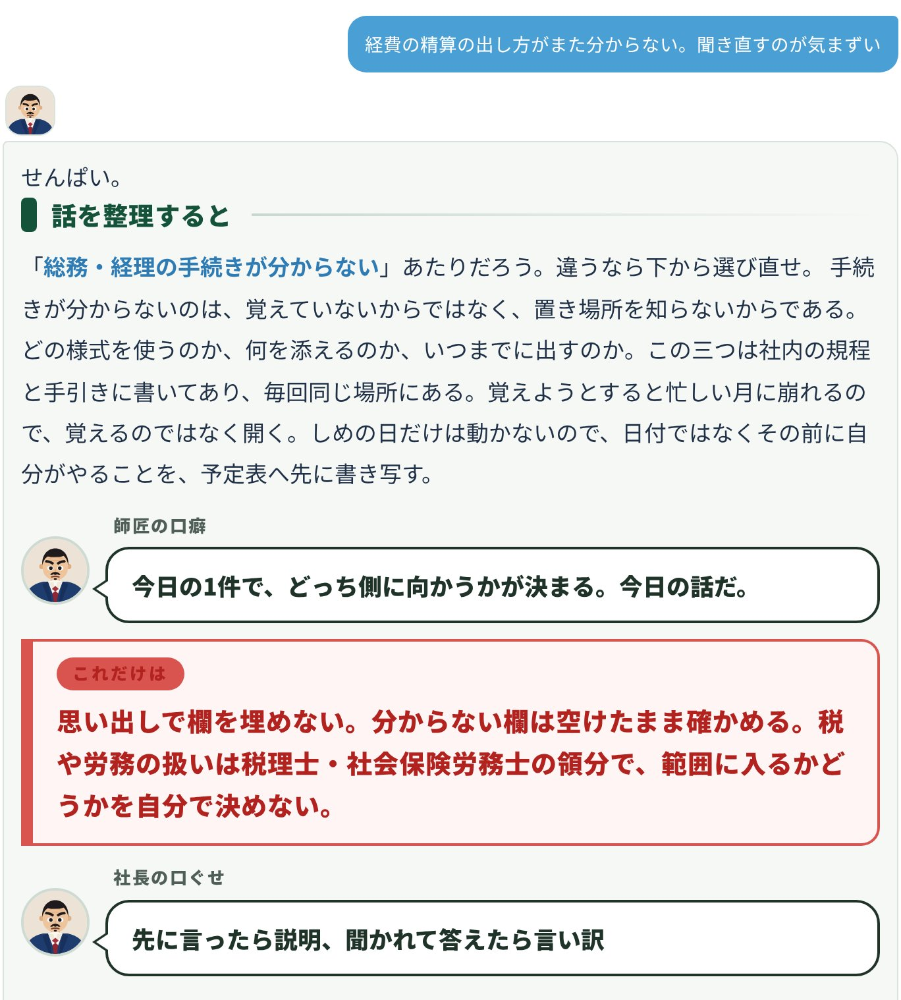

ケース01
「いくら要りますか」で、話が止まる。
こう解決します
いつもの家計を入れるだけで、100歳までのお金の見通しが1枚の表になります。現状と将来を並べて比べ、AI診断が10分野それぞれの「安心できる点」と「気をつけたい点」を両方出します。「いくら要りますか」ではなく「このままだと、どうなるか」から話を始められます。
- 約300世帯を作ってきた経験から生まれた入力項目
- その場で数字を動かせる
- 年齢別キャッシュフロー表は、A3横のPDFに

カタツギ保険代理店さま向け 教育とFPの道具一式
ライフプランの試算、お金の学び、資格、新人の相談、社内の決まり。代理店さまでよくうかがう11のお困りごとに、道具ごとにお答えします。となりに並べたのは、全て実際の画面です。
オンラインの画面共有で、中をお見せします。その場で決めていただく必要はありません。
代理店さまからよくうかがう場面を、11ケース。どれも、となりが実際の画面です。
ライフプランお客様の前で、数字から話す
ケース01
こう解決します
いつもの家計を入れるだけで、100歳までのお金の見通しが1枚の表になります。現状と将来を並べて比べ、AI診断が10分野それぞれの「安心できる点」と「気をつけたい点」を両方出します。「いくら要りますか」ではなく「このままだと、どうなるか」から話を始められます。

ケース02
こう解決します
ご入力と試算から、次の面談までにやることが優先度つきで並びます。重要度とスピードで四つに分け、期限と、お客様に送る文面の下書きまで。どこから出てきた話かも残るので、根拠を添えてお伝えできます。録音しなかった日でも出ます。

ケース03
こう解決します
面談の概要は、録音がなくてもご入力と試算から1枚にまとまり、パワーポイントやPDFにしてお客様にお渡しできます。商談の日付・時刻・方法（対面／オンライン／電話）・場所は、お客様ごとの記録として残り、一覧をCSVで書き出せます。

学び聞かれる前に、自分が分かっておく
ケース04
こう解決します
損得の話に見えて、実は線を3本引けば済む話です。生命保険・医療・年金・相続・税金まで、12分野・313個以上の学習資料を、まず自分が読む材料として置いています。読んだうえで、ご自身の言葉に置き換えてお話しいただく形です。

ケース05
こう解決します
医療保険・終身保険・相続・年金——更改の場面で聞かれる話や、こちらから情報提供したい内容を、事前に学んでおけます。学習資料のほぼ全ページに「逆転劇場」。保険業界で長年働いても知らなかった手が、助かった話として載っています。営業が知らないのですから、お客様が知っているはずもありません。

ケース06
こう解決します
商品の比較も、制度の仕組みも、お客様は画面の中で調べられます。渡すのは情報ではなく、その方の事情に合わせた解釈。教材「営業マンの学び」18本のうち「AI時代の営業」ほかで、その視点を先に身につけます。

ケース07
こう解決します
詰まる理由は、知識ではないことがほとんどです。何を聞くか、どこで一度止めるか。教材「感情と論理」で、説明の前に聞く順番を身につけます。決めるのはお客様で、その日に決めなくていい——この線も教材の中に入っています。

ケース08
こう解決します
売れないのに値が付く自社株、退職金、承継。教材「自社株と相続」「退職金の税」と、学習資料の「法人・経営」で、切り出し方と聞く順番を学べます。どこから先を士業に渡すかも、教材の中で線を引いています。

資格新人が、独りで進められる
ケース09
こう解決します
FP技能検定の3級・2級・1級に加えて、生命保険の一般課程から大学課程、損保の基礎単位から大学課程まで。13試験を、受ける順番と要件つきで地図のように並べてあります。「何から」に毎回答えなくてよくなります。

AI師匠社内の決まり社内で、聞ける先をつくる
ケース10
こう解決します
新人の隣に、24時間のAI師匠。相談を打つと、話の整理・考え方・今日やることが、図つきで返ってきます。管理職ご自身の「後輩をどう育てたいか」の相談にも。師匠は評価しないので、部下は何度でも聞き返せます。

ケース11
こう解決します
AI師匠には見本の社内規定30項目（有給・残業・育休・副業・在宅勤務・給与・退職金・ハラスメントなど）が入っていて、条番号を添えて、その場で答えます。「何日取れるか」「どこに書いてあるか」を、総務・経理・人事に一から聞かなくて済みます。確かめる先（部署・担当者・内線）も一緒に返します。導入のときに、この見本を御社の規程に差し替えます。
規定に書かれていない件・例外・迷う件は、これまでどおり担当部署でご確認ください。税や労務の扱いは税理士・社会保険労務士、法律上の判断は弁護士の領分です。

ケース11の中身
見本の社内規定（大手企業水準モデル・全58条）から、社員が実際に聞く30項目を書き起こして、AI師匠に入れてあります。下は、師匠が持っている中身をそのまま引用したものです。師匠は条番号を添えて答え、確かめる先（部署・担当者・内線）まで一緒に返します。
日数・金額・条番号・担当部署・担当者名・内線番号は、全て見本です。導入のときに、御社の就業規則・給与規程などに差し替えます（取り込みは別途お見積り）。
よく聞かれる6項目
確かめる先：人事部
入社日に15日。翌年度からは毎年4月1日に付与され、勤続5年未満は20日、5年以上10年未満は22日、10年以上は25日。出勤率の要件は無い。半日単位で取れる。時間単位は労使協定にもとづき年5日分まで。未消化分は翌年度に繰り越せる（付与から2年で時効）。持てる上限は50日。会社は取得率85%以上を全社の目標にしている。
取りたい日を指定して請求する。会社が時季を変えられるのは、事業の正常な運営を妨げる場合だけ。年5日に満たない人には、会社が本人の意見を聴いたうえで時季を指定する。
確かめる先：人事部
有給の特別休暇がある。結婚は本人7日・子の結婚2日、配偶者の出産5日、忌引は配偶者10日／父母・子7日／祖父母・兄弟姉妹・配偶者の父母3日、リフレッシュ休暇は勤続10年5日・20年7日・30年10日、不妊治療は年10日、生理休暇は月2日まで、ボランティアは年5日、裁判員などの公の職務と災害は必要な日数（災害は5日まで）。時効で消える有給は、最大60日まで積み立てられる。
積立休暇を使えるのは、本人の傷病（連続5日以上の療養）・家族の介護・不妊治療・子の看護のとき。
確かめる先：人事部
所定労働時間は1日7時間30分、週37時間30分。始業9:00、終業17:30、休憩12:00〜13:00の60分。フレックスタイム制は労使協定を結んだ部署に適用し、清算期間は1か月、コアタイムは無し、フレキシブルタイムは5:00〜22:00。終業から翌日の始業までは原則11時間以上あける（勤務間インターバル）。
休憩は、労働時間が6時間を超えるときは45分以上、8時間を超えるときは60分以上を途中に与える（第14条）。休憩時間は自由に使える。
確かめる先：人事部
残業と休日労働は、事前に申請して上長の承認を得てから行う。会社の基準は法定の上限より厳しく、時間外は月45時間以内・年360時間以内が原則。特別な事情があるときも、時間外と休日労働の合計は単月80時間未満・年600時間以内。月45時間を超えた人には、会社が産業医面談の機会を設ける。
労働時間はパソコンのログやICカードなど客観的な記録で把握する。始業・終業は正確に記録すること。
確かめる先：経理部
会社の割増率は、時間外（月60時間以下）30%、時間外（月60時間超）50%、法定休日40%、深夜（22時〜5時）25%。いずれも法定の最低率以上。時間外・休日の労働が深夜に及ぶときは、それぞれの率を足す。計算の基礎に入るのは基本給・役職手当・資格手当・住宅手当で、子ども手当・通勤手当・単身赴任手当・臨時の賃金・賞与は入らない。月平均所定労働時間は162.5時間。
労働基準法上の管理監督者にあたる人は、労働時間・休憩・休日の規定の対象外で、ここでいう時間外・休日の割増は付かない。ただし深夜の割増は支給される（第19条）。自分がそれにあたるかは、役職名ではなく実態で決まる。
確かめる先：人事部
休日は、土曜・日曜（日曜が法定休日）、国民の祝日、年末年始（12月29日〜1月3日）、夏季休暇（7〜9月に3日・各自が取得）、会社カレンダーで定める日。年間休日は125日以上が目安。
業務上やむを得ないときは、休日を他の日に振り替えることがある。
確かめる先：人事部
育児休業は、子が満2歳になる日までの間で取れる。生後8週間以内は、出生時育児休業（産後パパ育休）を別に取れる。最初の6か月は、育児休業給付金と合わせて休業前の賃金の80%相当（手取りでおおむね10割）になるよう会社が差額を出す。子が小学校を卒業するまで、1日2時間までの短時間勤務か、始業・終業の繰上げ繰下げができる。子の看護休暇は小学校卒業まで、子1人につき年10日（2人以上は年15日）を有給で。
会社は男性の育児休業取得を進めていて、対象者全員に働きかけることになっている。
確かめる先：人事部
介護休業は、対象家族1人につき通算365日まで、3回に分けて取れる。最初の3か月は、介護休業給付金と合わせて休業前の賃金の80%相当になるよう会社が差額を出す。介護休暇は対象家族1人につき年10日（2人以上は年15日）を有給で。介護のための短時間勤務は、通算3年以上の期間で認められる。
確かめる先：人事部
産前は8週間（多胎妊娠は14週間）、産後は8週間の休業ができる。会社は、出産手当金と合わせて休業前の賃金の80%相当（手取りでおおむね10割）になるよう差額を出す。
確かめる先：人事部
仕事以外の病気やケガで欠勤が連続1か月におよび、なお療養が要るときは休職になる。上限は勤続3年未満6か月、3年以上10年未満12か月、10年以上18か月。最初の6か月は、傷病手当金と合わせて標準報酬日額の80%相当になるよう会社が差額を出す。休職期間は勤続年数に通算しない。
復職は産業医の意見を踏まえて会社が判断する。復職から6か月以内に同じ傷病で再び休職するときは、期間を通算する。
確かめる先：人事部
副業・兼業は原則として認められる。やりたい人は、事前に所定の様式で申請する。会社が承認しないのは、①競業で会社の利益を害するおそれ ②会社の機密情報が漏れるおそれ ③通算の労働時間が過重で健康を害するおそれ——の3つの場合だけ。
黙って始めない。先に申請する。ここを飛ばすと、中身に問題が無くても手続きの違反になる。
確かめる先：総務部
業務の性質上できる場合に、申請して在宅勤務ができる。日数は週3日までが標準で、部署の事情により会社が調整する。環境を整える費用として、在宅勤務手当が1日300円（月の上限6,000円）出る。
確かめる先：経理部
給与は毎月末日で締めて、翌月25日に届け出た口座へ振り込む。支払日が休日のときは前営業日。控除されるのは、所得税・住民税・社会保険料のほか、労使協定にもとづく財形貯蓄・持株会の拠出金・組合費。月の途中で入社・退社したときや欠勤したときは、所定労働日数で日割り計算する。
確かめる先：経理部
役職手当は課長80,000円・部長150,000円。住宅手当は賃貸25,000円・持家（ローン返済中）15,000円。子ども手当は子1人15,000円（3人まで、18歳到達後の最初の3月末まで）。通勤手当は実費全額（月150,000円まで、最も経済的かつ合理的な経路）。在宅勤務手当は1日300円（月6,000円まで）。単身赴任手当は月50,000円＋帰省旅費（月2往復まで実費）。資格手当は月5,000〜30,000円。配偶者を対象とする手当は無い。
手当の課税・非課税の扱いは、税理士・社会保険労務士に確認することになっている。ここで判断しない。
確かめる先：経理部
賞与は年2回（6月・12月）で、標準は基本給の年5.0か月分（夏2.5・冬2.5）。会社の業績と個人の評価で増減し、個人評価による増減幅は標準額の±20%が目安。算定の対象期間は、夏が前年10月1日〜3月31日、冬が4月1日〜9月30日。支給日に在籍している人に支給する。業績が特に好調なときは決算賞与が別に出ることがある。
確かめる先：総務部
健康保険（組合管掌）・介護保険・厚生年金・雇用保険・労災保険に加入する。保険料の会社負担は、健康保険55%（本人45%）、厚生年金は法定の50%ずつ、雇用保険は法定の率、労災は全額会社。健康保険組合の付加給付として、同じ月の医療費の自己負担が25,000円を超えた分は払い戻される。企業型確定拠出年金には会社が月15,000円を拠出し、運用商品の選択は本人の責任。年1回、運用の教育がある。
個人型（iDeCo）との併用は法令の範囲内でできる。運用商品そのものの良し悪しは、ここでは答えない。
確かめる先：総務部
定期健康診断は年1回。35歳以上は人間ドックの費用を会社が全額負担し、35歳未満は隔年で受けられる。年1回のストレスチェックと、産業医・保健師・外部カウンセラーの相談窓口（EAP）がある。インフルエンザ予防接種の費用も会社負担。長期間働けなくなったときの所得を補う団体長期障害所得補償と、団体定期保険にも会社の負担で加入している。
確かめる先：総務部
独身寮は入社から5年目まで入居でき、寮費は月10,000円。転勤者は会社が借り上げた社宅に入れて、自己負担は賃料の20%が目安（税務上の賃貸料相当額を踏まえて細則で定める）。寮・社宅に入っている期間は、住宅手当は出ない。
確かめる先：総務部
結婚祝金50,000円、出産祝金は子1人100,000円（第3子以降300,000円）、弔慰金は本人の死亡500,000円・配偶者や子100,000円・父母50,000円、災害見舞金は全壊300,000円／半壊150,000円、リフレッシュ休暇の旅行補助は勤続10年100,000円・20年200,000円・30年300,000円。満3歳までの子の認可外保育・ベビーシッター費用は月30,000円まで補助。カフェテリアプランが年60,000ポイント（1ポイント＝1円。旅行・育児・介護・健康・レジャーに使える）。財形貯蓄（一般・年金・住宅）と従業員持株会があり、持株会は拠出額の10%が奨励金として支給される。業務に関する資格・語学・通信教育は年100,000円まで補助され、指定資格の合格には報奨金が出る。
確かめる先：人事部
自己都合で辞めるときは、退職希望日の1か月前までに退職願を出す。退職日までに引継ぎを終え、貸与品を返す。定年は満60歳（到達した日の属する月の末日で退職）。希望すれば65歳まで嘱託として継続雇用され、賃金は定年直前の基本給の80%が目安。65歳を超えても、意欲と健康があれば本人の希望で70歳まで継続雇用の対象になる。勤続年数は通算され、有給も続けて付与される。
退職証明書は請求に応じて交付される。離職票・源泉徴収票・社会保険の資格喪失の手続きも会社が行う。退職後の賃金は、請求のあった日から7日以内に支払われる。
確かめる先：人事部
勤続1年以上で支給されるポイント制。年間のポイントは、勤続ポイント25（全員共通）と等級ポイント（G1:10／G2:20／G3:30／G4:45／G5:60／G6:75）の合計を入社から累積する。支給率は、定年・会社都合・死亡・業務上の傷病が100%。自己都合は勤続1年以上3年未満30%、3年以上5年未満50%、5年以上10年未満70%、10年以上20年未満85%、20年以上100%。退職日から1か月以内に口座へ一括で振り込まれる。
懲戒解雇では全部または一部が支給されない。諭旨解雇は減額されることがある。退職後に懲戒解雇に相当する行為が分かった場合は、返還を求められることがある。税法上は退職所得なので「退職所得の受給に関する申告書」を会社に出す。
確かめる先：人事部・社外の相談窓口
セクシュアルハラスメント、パワーハラスメント、妊娠・出産・育児・介護に関するハラスメント、その他人格や尊厳を傷つける言動（カスタマーハラスメントを含む）は禁止されている。取引先やお客様との間でも同じ。相談窓口は社内（人事部）と社外（外部専門機関）の両方にある。相談を受けたら、会社は事実関係を迅速かつ正確に調べ、被害者の保護と再発防止にあたる。
相談したこと、調査に協力したことを理由に、不利益な扱いを受けることはない。社内に言いにくければ、社外の窓口に直接かけてよい。
確かめる先：法務・コンプライアンス室・社外の相談窓口
法令違反や不正行為を見つけたときは、内部通報窓口に通報できる。会社は通報者の秘密を守り、通報を理由に不利益な扱いをしない。
自分で確かめようとして動く前に、まず通報する。証拠を残そうとして無理に動くと、こちらが問題になることがある。
確かめる先：人事部
懲戒は、譴責・減給・出勤停止（10日以内・無給）・降格・諭旨解雇・懲戒解雇の6種類。減給は1回が平均賃金の1日分の半額以内、総額が一賃金支払期の賃金総額の10分の1以内。事由は、正当な理由のない無断欠勤が続くこと、再三の注意にもかかわらず遅刻・早退を繰り返すこと、機密情報や個人情報の漏えい、指示命令に従わず職場の秩序を乱すこと、ハラスメント、会社の金品の横領や経費の不正請求、会社の信用を著しく傷つける犯罪行為、採用時の重大な経歴詐称。
処分の前に、本人に必ず弁明の機会が与えられる。出勤停止以上は、人事部長が招集する懲戒委員会の審議を経て社長が決める。
確かめる先：法務・コンプライアンス室
守るべきことは、会社の名誉・信用を傷つけないこと、業務上知った会社・取引先・お客様の秘密を在職中も退職後も漏らさないこと、設備・備品・情報システムを私用に使わないこと、在職中は競合する事業に従事しないこと、SNSなどで機密情報や誹謗中傷を発信しないこと、ハラスメントをしないこと。
秘密保持は退職後も続く。SNSは、社名を出していなくても特定されることがある。迷ったら出す前に相談する。
確かめる先：人事部
業務上の必要により、配置転換・転勤・出向を命じられることがあり、正当な理由なく断ることはできない。転居を伴う異動は、原則として1か月前までに内示される。育児・介護・本人の健康状態などの事情には配慮される。
事情があるなら、内示を受けてから黙って抱えない。早めに伝えるほど配慮の余地がある。
確かめる先：人事部
基本給は職務等級ごとの範囲で決まる（G1一般225,000〜330,000円／G2中堅300,000〜390,000円／G3主任・リーダー340,000〜450,000円／G4主査420,000〜540,000円／G5課長500,000〜650,000円／G6部長620,000〜800,000円）。初任給は大学院修了305,000円・大卒280,000円・短大専門250,000円・高卒225,000円。昇給と昇格は年1回・4月。定期昇給の標準は基本給の2.5〜3.0%。ベースアップは業績と物価を踏まえて労使協議で毎年決める。人事評価は年1回、目標管理にもとづき、期首と期末に面談があり、結果は本人に開示される。
評価に納得がいかないときは、人事部に再確認を申し出ることができる。
確かめる先：人事部
この規定集が適用されるのは、期間の定めのない雇用契約で採用された正社員。契約社員・パートタイム労働者・嘱託社員には、別に定める規程が適用される。規定に定めのないことは、労働基準法その他の法令と労使協定による。規定の基準が法令を下回る場合は、法令の基準のほうが適用される。新たに採用した人には入社日から3か月の試用期間があり、会社が本採用をしないことがあるのは、試用期間中に従業員として不適格と客観的かつ合理的に認められる場合に限られる。試用期間も勤続年数に通算される。
自分にどの規程が適用されるか分からないときは、先に確認すること。ここで返しているのは正社員向けの内容。
確かめる先：人事部
労働基準法上の管理監督者にあたる人には、労働時間・休憩・休日に関する規定は適用されない。ただし深夜労働（22時〜5時）の割増賃金は支給され、健康を守るために労働時間の把握は行われる。
役職名が課長・部長であることと、労働基準法上の管理監督者にあたるかどうかは別の判断になる。自分がどちらかは確認すること。
確かめる先：人事部
会社が解雇できるのは、次のいずれかに該当し、他の方法でも雇用を続けられない場合に限られる。①勤務成績が著しく不良で、指導や配置転換でも改善の見込みがないとき ②心身の障害で業務に耐えられないと認められるとき ③事業の縮小など経営上やむを得ない事由があるとき ④懲戒解雇の事由に該当するとき。解雇するときは、少なくとも30日前に予告するか、30日分以上の平均賃金を支払う。業務上の傷病による療養期間と産前産後休業の期間、およびその後30日間は、法令で定める場合を除いて解雇されない。このほか、事業上の必要があるときに、退職金へ加算金を上乗せする早期退職優遇制度が募集されることがある。
懲戒による解雇（第56〜58条）とは別の話。実際に通知を受けたときは、一人で判断せず必ず相談すること。
確かめる先（見本）
| 人事部 | 佐藤さん 内線1101 |
|---|---|
| 総務部 | 鈴木さん 内線1201 |
| 経理部 | 田中さん 内線1301 |
| 法務・コンプライアンス室 | 高橋さん 内線1401 |
| 社外の相談窓口 | 0120-000-000（平日9:00〜18:00） |
ハラスメントと内部通報は、社内の窓口に加えて社外の相談窓口も返します。
実際の画面から書き写しました。赤い一行が、今日いちばん持ち帰ること。最後の青い一行が、社長の口ぐせです。
「部下が動かない」あたりだろう。違うなら下から選び直せ。動かないのは気合い不足でなく、壊れない入り方を渡していない構造の問題。若手ができないのは教える側の問題。
師匠の口癖
標準装備というのは、その人の人としてのレベルのことだ。商品知識の話ではない。
人でなく仕組みを変える。モチベーションでなくタスク。上司が先に変わることを宣言する。
社長の口ぐせ
先に言ったら説明、聞かれて答えたら言い訳
最後の一行が、人物設定に書いた社長の口ぐせです。
「総務・経理の手続きが分からない」あたりだろう。違うなら下から選び直せ。手続きが分からないのは、覚えていないからではなく、置き場所を知らないからである。どの様式を使うのか、何を添えるのか、いつまでに出すのか。この三つは社内の規程と手引きに書いてあり、毎回同じ場所にある。覚えようとすると忙しい月に崩れるので、覚えるのではなく開く。しめの日だけは動かないので、日付ではなくその前に自分がやることを、予定表へ先に書き写す。
師匠の口癖
今日の1件で、どっち側に向かうかが決まる。今日の話だ。
思い出しで欄を埋めない。分からない欄は空けたまま確かめる。税や労務の扱いは税理士・社会保険労務士の領分で、範囲に入るかどうかを自分で決めない。
社長の口ぐせ
先に言ったら説明、聞かれて答えたら言い訳
「また聞くのは気まずい」も、師匠には何度でも。答えは御社の規程と担当の方で確かめる、まで一緒に返します。
例えるぞ。同じ交差点で毎年事故が起きるなら、直すのは運転手ではなく、その交差点。何でだと思う？
同じ場所で起きているから。
失敗を本人の注意不足で片付けると、記録は欠点の一覧になる。手順・確認のタイミング・任せ方のどこが抜けていたかで書く。
正論の前に、例え話。質問と答えの2コマで、言いにくいことを先に絵にします。
返事は、相談の言葉と設定で変わります。AI師匠は、あらかじめ用意した知識から返す社内向けの相談ツールで、外部のAIサービスには接続していません。

同じ一言でも、社長が言えば評価になり、師匠が言えば助言になります。社長の型を、角の立たない口から部下へ。導入のとき、12の問いに社長が答えて、御社の師匠をつくります。
返事に混ざる、社長の口ぐせ
先に言ったら説明、聞かれて答えたら言い訳
社長がふだん言っている一行が、部下への返事の「これだけは」のすぐ下に出てきます。
同じ一言を、言う人だけ変えてみる
「もっと数字を見ろ」
言っている内容は、どちらも同じです。社長の言い方が悪いのでもありません。評価する立場が、部下の聞き返しを止めているだけです。
型は、継がれてはじめて型になる。
社内で使う9個も、学習資料313個以上も、一つの画面から。ブラウザで開くだけです。
会計・記帳代行を母体にした会社が、ファイナンシャルプランナーの目で中身を組み立てています。約300世帯のライフプランを作ってきた提案の視点が、そのまま道具になっています。
約300世帯の実績家計・住まい・教育・老後・保障・相続までを1枚に。AI診断は安心できる点と気をつけたい点を両方出すので、不安をあおる話になりません。
10分野の診断FP技能検定1〜3級に加えて、生保・損保の実務資格（基礎単位・商品単位・大学課程）まで同じ画面に。学ぶ順番も示します。
13試験・6,000問以上家計・税金・相続・公的保障・資産形成まで12分野。医療保険も終身保険も、独学でなく学習資料として置いてあります。朝礼の前に1本、移動の合間に1本と、少しずつ読める長さです。
12分野・313個以上意向把握・比較推奨・情報提供・高齢者募集などの実務ルールを100問で。見本の社内規定30項目も師匠に入っていて、導入のときに御社の規程に差し替えます。
コンプライアンス100本ノック相談の内容も、入力したお客様の情報も、お使いの端末に残るだけで、外部のサーバーへ送っていません。インストールも要らず、導入はリンクを配るだけです。
音声の機能だけはブラウザの機能を使います学習資料は、生命保険・法人・経営・損害保険・税金・公的保障・相続・終活など12分野。教材は、保障額の根拠、退職金の税、自社株と相続、聞く力、判断の歪みなど18本です。
社内ツール9個（AI師匠から満期・年齢到達カレンダーまで）と、ライフプランツールです。管理画面の「監査資料」では、研修台帳・募集資料台帳・資格と届出の期限をまとめて印刷できます。
学習資料と社内ツールは、代理店さまの中で学ぶためのものです。お客様への提示・配布はご遠慮ください。
どちらも代理店さま単位です。人数による追加の料金はかかりません。
110,000円税込・初回のみ
社内教材・独自資料の取り込みは含みません。別途お見積りです（利用規約 第9条3項）。
募集人5名以下
55,000円
税込・月額
募集人6名以上
110,000円
税込・月額
導入時に組み直した御社用の中身のまま使えます。内容の更新・追加も月額に含みます。
一つずつ組み直してお渡しするため、同時にお受けできるのは20社までとしています。
その場で決めていただく必要はありません。持ち帰って、社内でご検討ください。
2営業日以内にご返信し、日程を決めます。
フォームで体験版の欄に印を付けると、面談の前にURLをお送りします。
オンラインの画面共有で、実際に動かしてお見せします。
ご契約とお支払い（前払い）のあと、12の問いに答えていただき、師匠と前に出す分野を決めます。
ご入金の確認後、最短3営業日で専用URLと合言葉をお渡しします。
発行から7日、または最初に開いたときから72時間の、早いほうで終わります。体験版で入力した内容は、ご契約後には引き継がれません。
面談フォームで、体験版を希望するその場で決めていただく必要はありません。
| 商号 | 株式会社 Office-M |
|---|---|
| 代表者 | 高橋 秀和 |
| FP事業部 執行役員 | 中谷 陽介 |
| 所在地 | 愛媛県伊予郡砥部町宮内592番地1 |
| 連絡先 | y.nakatani@office-m-tax.com |
| 事業内容 | 会計・記帳代行業務を母体とする、ライフプランニング（人生設計・資金計画）の相談支援／保険代理店向け 教育・提案支援ツールの提供 |
| 税務のご相談 | 当社は税理士法人ではありません。税務代理・税務書類の作成・個別具体的な税務相談など税理士にしか行えない業務は、提携する税理士をご紹介し対応します。 |
画面共有で、AI師匠と学習資料、ライフプランツールを実際に動かしてお見せします。持ち帰って社内でご検討いただいて構いません。
30分の面談を申し込むその場で決めていただく必要はありません。
2営業日以内にご返信します。メールでのご連絡：y.nakatani@office-m-tax.com